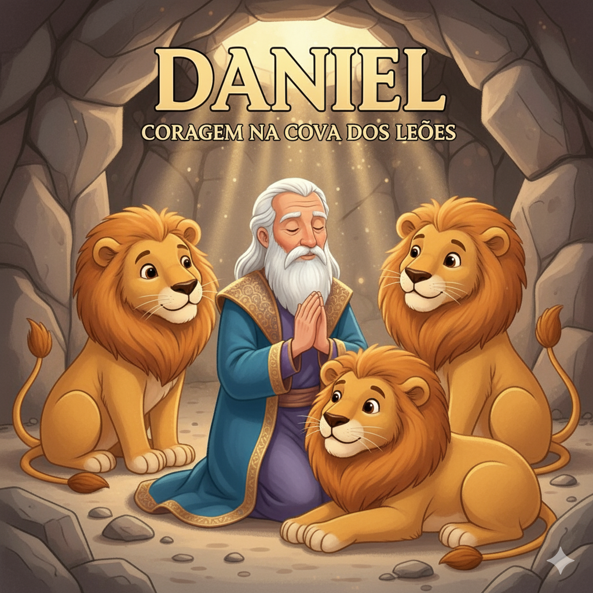
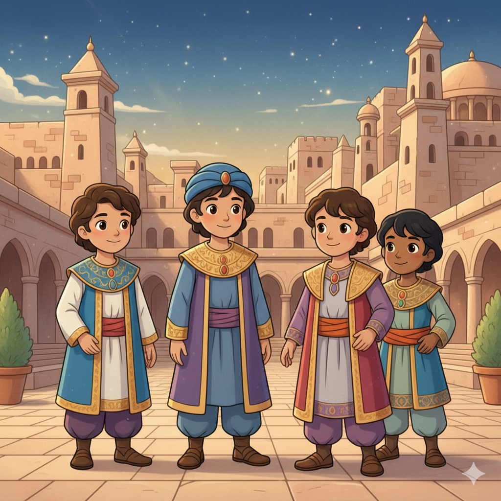
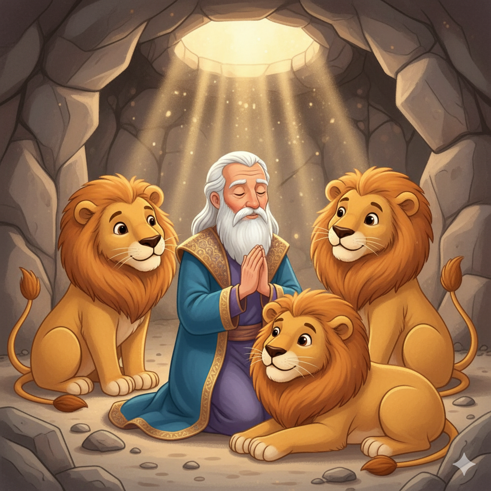
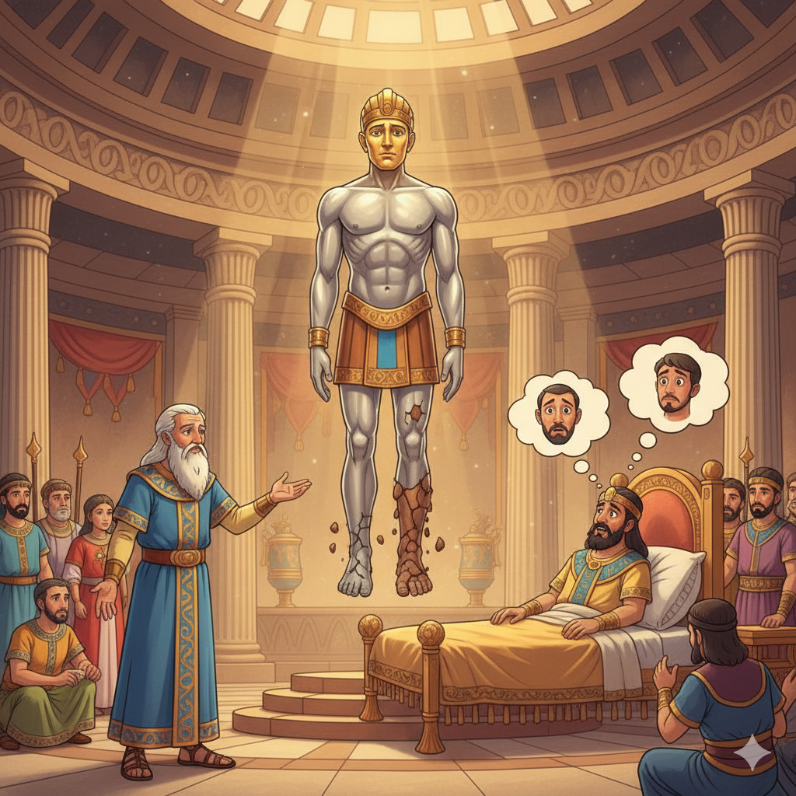
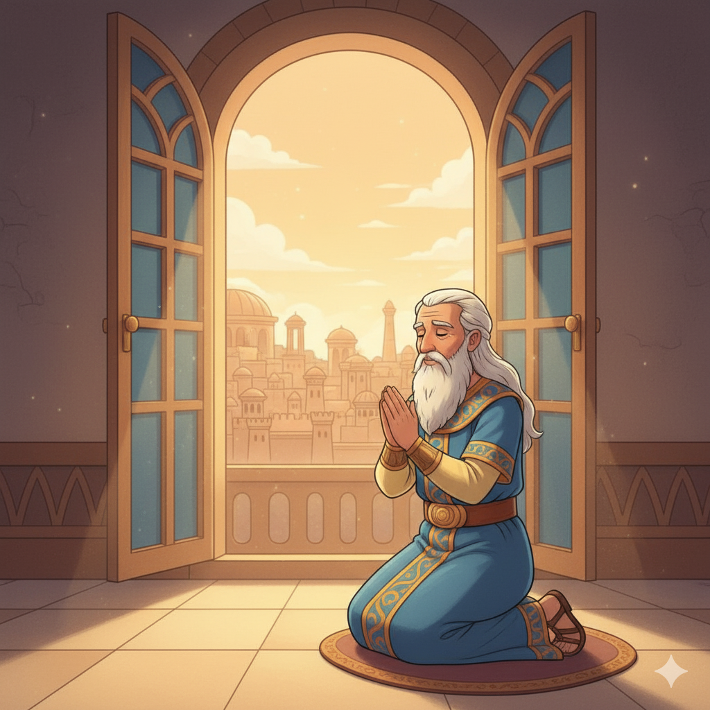

Coragem, Sonhos e o Reino Eterno de Deus — Um Resumo Visual para Crianças
Daniel e seus amigos foram levados para longe,
Num mundo que queria que eles mudassem o nome!
Recusaram a comida, recusaram o ídolo e a lei,
Mas nunca deixaram de servir o seu Rei!
Fé de verdade não negocia com o que o mundo quer,
Ela confia em Deus — aconteça o que acontecer!
📖 Daniel 3:18 — "Mesmo que não nos livre, saiba, ó rei, que não serviremos a teus deuses."
Proibiram Daniel de orar — mas ele foi orar,
Três vezes ao dia, voltado a Jerusalém a suplicar!
Os leões esperavam, a cova estava aberta,
Mas a boca das feras ficou completamente fechada!
A oração não muda as circunstâncias primeiro —
Ela muda quem ora. Isso é o que é verdadeiro!
📖 Daniel 6:10 — "Daniel... orou e deu graças diante do seu Deus, como costumava fazer antes."
Babilônia caiu, Pérsia veio e Grécia também,
Roma passou, e assim vai o poder de alguém!
Mas o Filho do Homem recebeu um reino sem fim,
Um reino que venceu o mundo — e esse sou eu, e esse és tu assim!
Os poderes desta terra são como areia no mar,
Mas o Reino de Deus, iniciado por Jesus, jamais vai acabar!
📖 Daniel 7:14 — "E foi-lhe dado domínio, glória e poder real... o seu domínio é eterno."
👑
"Nos dias desses reis, o Deus do céu levantará um reino que jamais será destruído."
Daniel 2:44
Todos os reinos poderosos da história passaram — Roma, Babilônia, Grécia, Pérsia. Mas o Reino de Deus, inaugurado por Jesus, não terá fim. Daniel viu isso seis séculos antes de Jesus nascer!
Jovem hebreu levado cativo para a Babilônia, Daniel tinha sabedoria dada por Deus para interpretar sonhos e visões. Mesmo sob ameaça de morte, nunca deixou de orar três vezes ao dia, voltado para Jerusalém.
📖 Leia na Bíblia — Daniel 6:16
"Ao teu Deus, a quem tu serves continuamente, ele mesmo te livrará."
Os três amigos corajosos de Daniel que foram lançados na fornalha ardente por se recusarem a adorar o ídolo de ouro de Nabucodonosor. Na fornalha, apareceu uma quarta pessoa ao lado deles!
📖 Leia na Bíblia — Daniel 3:18
"Mesmo que não nos livre, saiba, ó rei, que não serviremos a teus deuses."
O rei mais poderoso da Babilônia que sonhou com uma estátua de metais. Deus o humilhou com sete anos de loucura até que ele aprendeu que "o Altíssimo domina no reino dos homens".
📖 Leia na Bíblia — Daniel 4:37
"Agora eu, Nabucodonosor, louvo, exalto e glorifico o Rei do céu."


📖 Leia em casa!
Daniel tem 12 capítulos. Cap. 3 tem a fornalha ardente; cap. 6 tem a cova dos leões; cap. 7 tem a visão do Filho do Homem — uma das mais importantes profecias sobre Jesus!
⚔️ Parte 1 (Cap. 1–6): Fiéis na Babilônia
Daniel e seus amigos são levados cativos para a Babilônia. Eles enfrentam pressões para abandonar sua fé — a comida do rei, o ídolo de ouro, a proibição de orar — mas escolhem ser fiéis a Deus em cada situação. A fornalha e a cova dos leões não os vencem!
📖 Daniel 1:8 — "Daniel, porém, propôs no seu coração que não se contaminaria com a comida do rei."
🌌 Parte 2 (Cap. 7–12): Visões do Futuro
Daniel recebe visões proféticas extraordinárias — quatro animais representando impérios, o Filho do Homem recebendo domínio eterno, e o anjo Gabriel explicando o futuro. A mensagem central: Deus controla toda a história, e o Seu reino vencerá todos os outros!
📖 Daniel 7:14 — "E foi-lhe dado domínio, glória e poder real... o seu reino jamais será destruído."
🔮 Sonhos e Interpretações
Daniel interpretou o sonho da estátua de metais (cap. 2), a árvore derrubada (cap. 4) e decifrou a misteriosa escrita na parede "Mene, Mene, Tequel, Parsim" (cap. 5). Em cada caso, Deus revelou a Daniel o que nenhum sábio humano conseguia entender!
📖 Daniel 2:28 — "Mas há um Deus no céu que revela os mistérios."
Daniel viveu numa cultura que tentava de tudo para fazê-lo abandonar sua fé. O livro ensina que é possível seguir a Deus com integridade mesmo sendo minoria, mesmo sofrendo consequências — e Deus honra quem o honra!
📖 Daniel 6:23
"E não foi encontrado nele nenhum dano, pois confiara no seu Deus."
Os três amigos não pediram garantias antes de se recusar a adorar o ídolo. Eles disseram: "Mesmo que Deus não nos salve, não vamos adorar." Isso é fé genuína — confiar em Deus sem condições, não como um contrato!
📖 Daniel 3:17-18
"O nosso Deus... pode livrar-nos. Mas, mesmo que não nos livre, não serviremos a teus deuses."
A visão de Daniel 7:13-14 é a maior profecia messiânica do AT — o "Filho do Homem" que recebe domínio eterno. Jesus usou exatamente esse título mais de 80 vezes. Na noite de Seu julgamento, Jesus citou Daniel 7 para o sumo sacerdote!

Daniel foi escrito para judeus que viviam sob domínio de impérios pagãos e sofriam pressão para abandonar sua fé. O livro diz: os fiéis podem manter sua integridade. Deus não abandonou Seu povo — e não vai abandonar!
📖 Daniel 12:3
"Os sábios resplandecerão como o resplendor do firmamento... como as estrelas, para todo o sempre."
As visões de Daniel mostram que nenhum império humano é a palavra final. Babilônia, Pérsia, Grécia, Roma — todos passam. Apenas o Reino de Deus é eterno. Isso dá esperança para viver com coragem no presente!
📖 Daniel 4:34
"O Altíssimo domina no reino dos homens e o dá a quem quer."
🌟 Lição Principal: Fé não é ausência de perigo — é confiar em Deus dentro do perigo. Daniel e seus amigos não foram poupados das ameaças, mas foram protegidos dentro delas. O Reino de Deus sempre vence!
🌍 Duas línguas num só livro: Daniel foi escrito em duas línguas — hebraico (caps. 1 e 8–12) e aramaico (caps. 2–7). O aramaico era a "língua internacional" da época, como o inglês hoje. É a única seção longa da Bíblia escrita nessas duas línguas alternadas!
🔥 A quarta pessoa na fornalha: Quando Nabucodonosor olhou para a fornalha, viu não três, mas quatro pessoas caminhando — e a quarta tinha "aparência como a de um filho dos deuses" (Dn 3:25). Muitos estudiosos veem ali uma aparição de Cristo antes de sua encarnação!
📛 Nomes trocados, fé mantida: Os babilônios trocaram os nomes hebreus dos jovens (que honravam a Deus) por nomes de deuses pagãos — Daniel virou Beltessazar, Hananias virou Sadraque. Mas por mais que mudassem os nomes, não conseguiram mudar a fé deles!

"Filho do Homem" em Daniel 7:13-14 é o título que Jesus mais usou para si mesmo nos Evangelhos — mais de 80 vezes! Na noite do seu julgamento, Jesus citou exatamente Daniel 7 ao falar ao sumo sacerdote.
O anjo Gabriel que aparece para Daniel (Dn 8:16; 9:21) é o mesmo anjo enviado para anunciar o nascimento de Jesus a Maria (Lc 1:19, 26).
A profecia das "70 semanas" de Daniel 9 anuncia a vinda do "Ungido" (Messias) e tem sido estudada como apontando para o tempo do ministério de Jesus.
Jesus cita Daniel em seu julgamento
"Vocês verão o Filho do Homem assentado à direita do Todo-Poderoso e vindo sobre as nuvens do céu."
📖 Mateus 26:64
Jesus dizia: "Essa visão que Daniel viu? Sou eu." O sumo sacerdote rasgou suas vestes, pois entendeu perfeitamente o que Jesus estava dizendo.
Converse com sua família, turma ou professor sobre essas perguntas!
🙏
Daniel continuou orando mesmo sabendo que poderia ser lançado aos leões. O que você faz quando seguir a Deus tem um custo? Você faz o que é certo mesmo quando é difícil?
🔥
Os três amigos disseram: "Mesmo que Deus não nos salve, não vamos adorar seu ídolo." O que você aprende sobre fé com isso? Você confia em Deus mesmo quando ele pode não resolver tudo do jeito que você quer?
🌌
As visões de Daniel mostram que Deus controla toda a história. Como saber isso te ajuda quando as coisas ao redor parecem estar fora de controle? Que situação difícil você pode confiar a Deus?
Escolha um desafio (ou faça os três!) e seja um explorador da Bíblia!
🙏
Daniel orava três vezes ao dia, sem falhar. Escolha um horário fixo — manhã, almoço ou noite — e ore a Deus todos os dias desta semana. Que nada interrompa esse compromisso!
✍️
Escreva "O Deus do céu levantará um reino que jamais será destruído" e cole em algum lugar da sua casa. Lembre-se: o poder de Deus é maior que qualquer problema!
📖
Leia a história da fornalha ardente em voz alta para alguém da sua família! Depois pergunte: em que situação você precisaria ter a coragem de Sadraque, Mesaque e Abede-Nego?
Trilho Kids | Desenvolvido com ❤️ para crianças © 2025